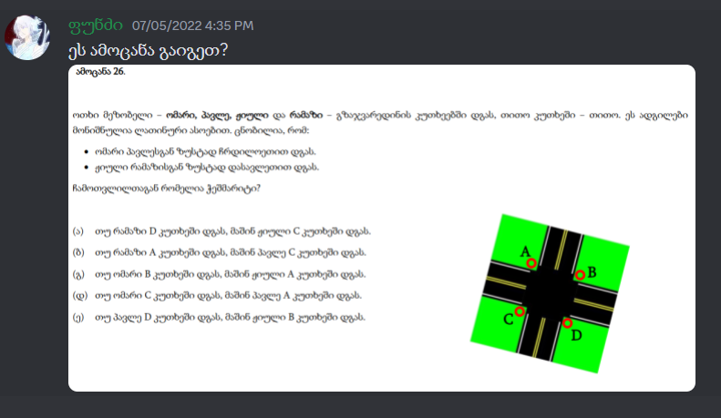

ჰანგები წარსულიდან
2023 წლის ერთ-ერთი ღამეა და შენზე დავფიქრდი, გამახსენდა განუსაზღვრელ(არ მინდა ვთქვა როდის დავფიქრდი შენზე და
როდის დავიწყე ამის კეთება) თვეში შენი დაბადების დღე როა და მე უბრალოდ ფიზიკურად არ მომეცა
შანსი რამე მეჩუქა შენთვის რომელიმე დაბადების დღეზე, პირველს თუ არ ჩავთვლით, რომელზეც გაჩუქე საათი, რომელსაც
ჩუქნის დღიდანვე მტრობ და ამტვერებ წიგნების თაროზე, ნუ მაგის მერე სულ ჩემს დაბადების დღეზე ვიყავით ხოლმე კარგად
და შენ
მჩუქნიდი ხოლმე, კიდევ გამახსენდა ფაქტი, როდესაც დენდროლოგიურში მითხარ რომ ზოგჯერ სხვებისგან, ნაკლებად
მნიშვნელოვანი ადამიანებისგან უფრო გრძნობდი დაფასებას ხოლმე ვიდრე ჩემგან, ეგ კი სიმართლე გითხრა მაგრა გამიტყდა
მაშინ და მახსენდებოდა ხოლმე შიგადაშიგ. შემდეგ დავფიქრდი რა შეიძლებოდა გამეკეთებინა შენთვის რო აი იმ დამღლელი
მატერიალური საჩუქრებისათვის მეჯობნა(დავიღალე მართლა,დღევნადელობაში ხალხს ფანტაზია დაკარგული აქვს და ერთმანეთს
ყველა რაღაც ბანძობას ჩუქნის), ხოდა ვიფიქრე საიტს ავუწყობ და ვატივტივებ სადმე ვებში-მეთქი, ნუ ჩემი ფანტაზია
ვებსაიტებსაც კი გაცდა, მაგრამ მაინც მათ დასჯერდა(not exactly, მალე გაიგებ რასაც ვგულიხმობ).
ამა თვის ამა ღამეს დავიწყე ამ ვებსაიტის კეთება, რამდენიმე დღე ვაკეთე, სახე გავიძრე და მერე მივატოვე კაი ხანი,
შემოვდე ჩემს კარადაზე და დავმტვერე, მერე საცხა შემხვდი და ისევ გამახსენდა საიტი, მარა მაინც არ გავაგრძელე,
ძაან
რო არ გავწელო და მოკლედ რომ გითხრა, ერთი გარდამტეხი მომენტი მქონდა განუსაზღვრელი დროის წინათ, როცა დავფიქრდი
რო უნდა
დამესრულებინა
ბოლომდინ
და თანაც ისე რო რავი დარწმუნებული ვყოფილიყავი ასეთ საჩუქარს თუ არა ეთ ლისტ საიტს მაინც რო არ მოგიძღვნიდა
არავინ,
არასდროს,
როგორი ასეთი კონკურენტუნაირაინი ბიჯი. ნუ იცი რაა, შეიძლება ვინმე მომავალში დაჯდეს სამი დღე-ღამე ნახატი
გიხატოს ან რამე შეგიქმნას, სახე გაიძროს, მარა რეალურად მე უფრო მეტი დრო მაქვს დათმობილი შენი 21 წლის
იუბილესათვის, ხოდა ნოუ
ვორის. თანაც არ გეგონოს რამე ტუტორიალის მიხედვით აგიწყე, ბანძად, ნო, ჩემით ვეწვალე, ისე მთლად სპოტიფაისთვის არ
მიმისგავსებია,
მარა მიუზიკ ფლეიერის დიზაინის ინსპირაცია ეგ იყო და ვხსნიდი სპოტიფაის ხოლმე და ვამთხვევდი რაცხებს, შეიძლება
ბოლომდე ვერც აღიქვა,
აი თუნდაც მუსიკა რომ გაისმის და დაბლა მიუზიკ ბარი რომ მიდის მაგას რო აჭერ და გასული ნაწილი მწვანე როა
დანარცენი
კი ნაცრისფერი, აი
ეგეთი დეტალების გაკეთება მაგარი წვალებაა აი მაგარიი. თითეული წამისა და მომენტის დაჭერა რო მუსიკა გაისმოდეს
ვებსაიტზე და
დიზაინიც იცვლებოდეს რელაციურად მაგაზე აღარაფერს ვამბობ, მალა ჰო, ესაა რაცაა
P.S
ვაღიარებ, რომ ანდრიასთან ჰორიზონტის მხარეები შემეშალა, თან რამდენიმე ჭიქა მქონდა დალეული და გავჯიუტდი,
არ ვაღიარებდი და მერე გამსწორებასაც კი ვცდილობდისავით, დესპერადო ვიყავი :დდ , მარა არაუშავს,
ხომ გაგიგია: "როგორც ერთი სიბრძნე ვერ აქცევს ადამიანს გენიოსად, ისე ერთი სისულე - იდიოტად". თანაც იმედია
გახსოვს
მხარეებზე უნარების ამოცანა ვინ აგისხნა :*

Album
{{currentMusic.album}}
Lyrics
no lyrics, first choose a song
Elaboration
{{currentMusic.elaboration}}